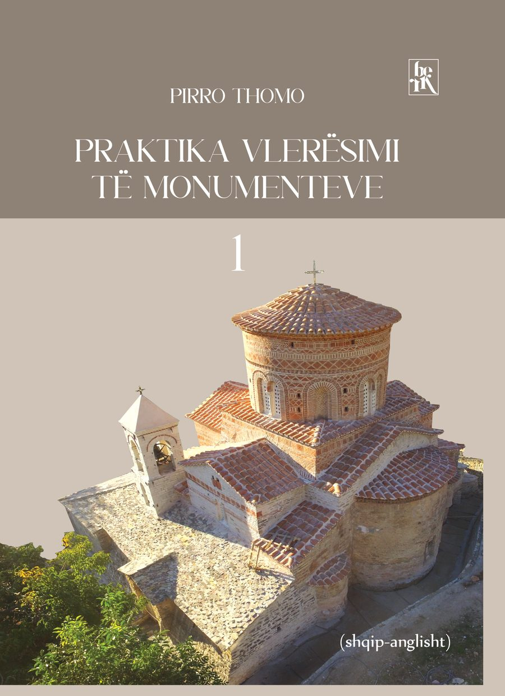

Praktika Vlerësimi të Monumenteve
Pirro Thomo · Vëllimet I dhe II · shqip–anglisht · 2024
Mbi tridhjetë shembuj restaurimi të realizuar apo të drejtuar nga vetë autori, nga kishat e banesat e Shqipërisë, nga monumentet e Malit të Shenjtë, të Selanikut etj., të grupuara sipas problemeve që ato paraqisnin. Libri përmban edhe studimet për vënien në mbrojtje shtetërore të qendrave historike, ansambleve arkitektonike, banesave e kishave.
- Faqe
- 904
- Viti
- 2024
- Gjuha
- Shqip dhe anglisht, tekst paralel